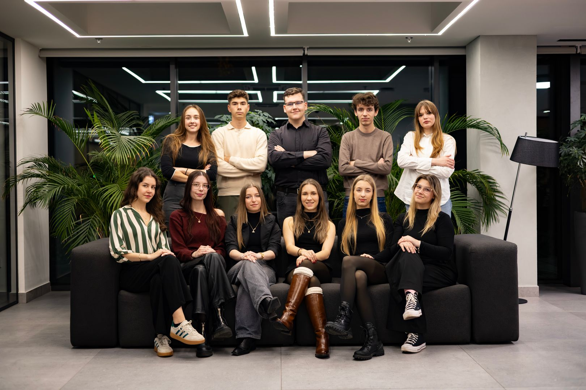
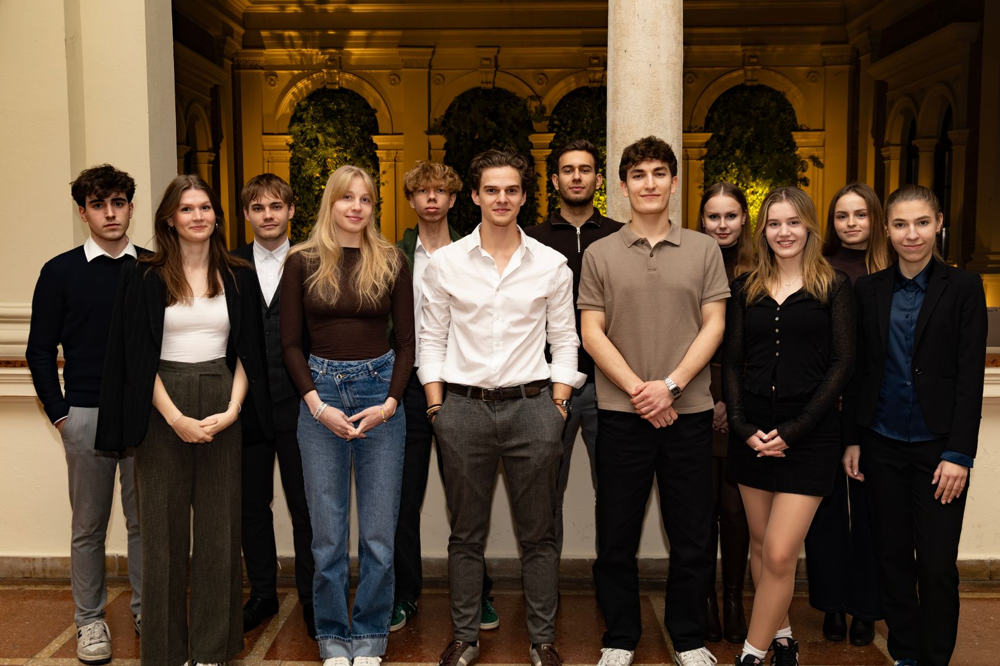
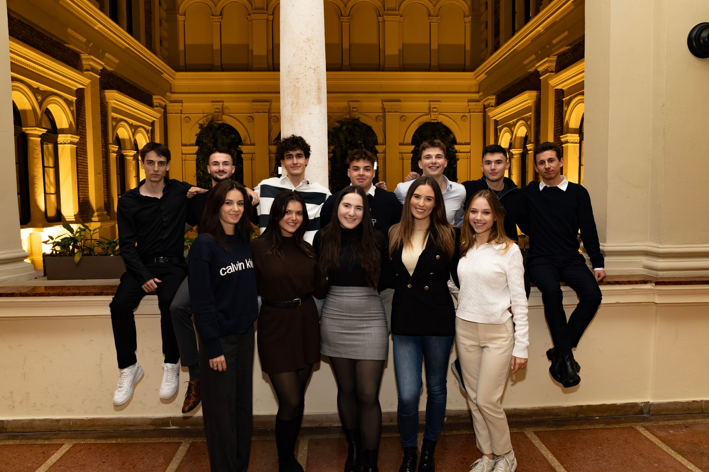
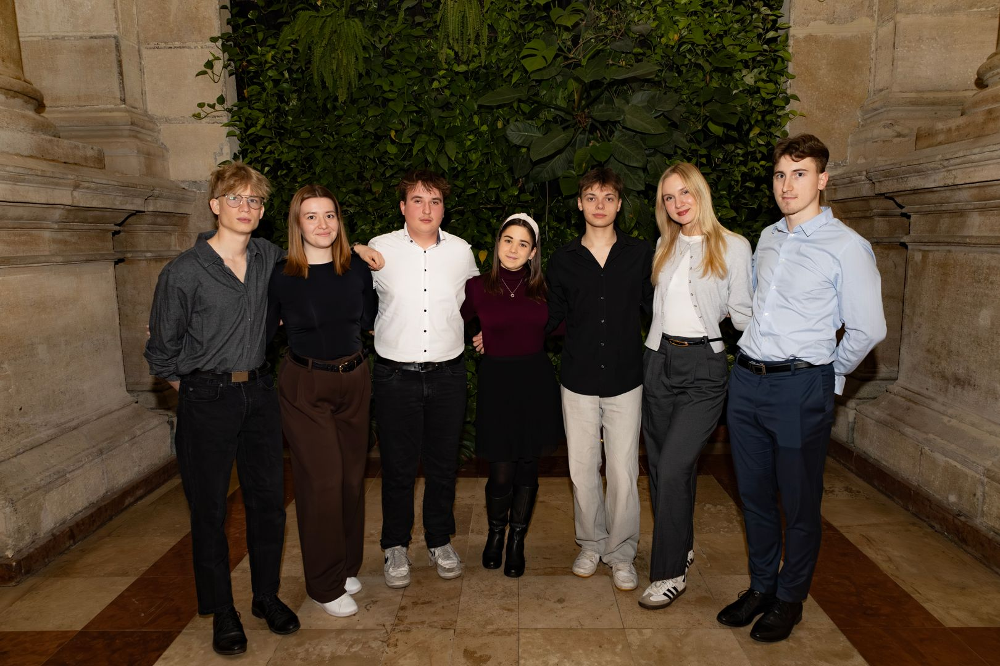
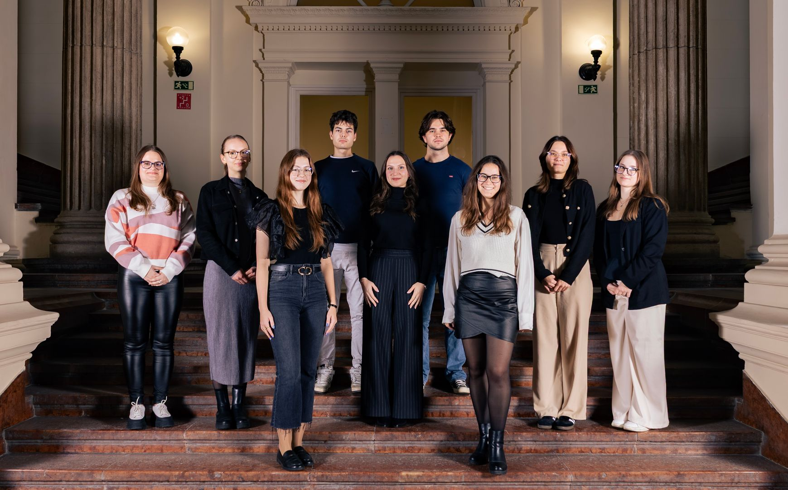

Szervezeti felépítésünk
Elnökség
A HÖK legfőbb döntéshozó testülete az Elnökség, amely a szervezet elnökéből és három alelnökéből áll. Az elnök személyéről kétévente, az alelnökökről évente közvetve dönthetnek a hallgatók a Küldöttgyűlés-választásokon. A 2025 júniusában felállt új Elnökség tagjai Mészner Gergely (elnök), Bányai Barnabás (alelnök), Hegedűs László (alelnök) és Haraszti Dóra (alelnök). Legfőbb célkitűzéseik a hallgatói érdekképviseleti stratégia gyökeres átgondolása, a HÖK transzparens működésének erősítése és a belső demokratikus működés növelése.

HR Terület
A HR Terület kezében hatalmas szervezeti felelősség van folyamatosan, hiszen ő alakítja a szervezet kultúráját, támogatja a tagok szakmai fejlődését, és belsős rendezvények szervezésével erősíti a közösséget és tartja fent a motivációt. Emellett felelős az új tagok beilleszkedéséért és a csapatépítésért, amely alapjaiban meghatározza a szervezet működését és hatékonyságát.
Kommunikációs terület
A Kommunikációs Terület kezeli a Corvinus HÖK közösségi oldalait, amire videós és képi tartalmakat készítünk. A Terület fontos része, hogy a hallgatókkal egy aktív és rugalmas kapcsolatot építsen ki, hogy a HÖK egy izgalmas egyetemi életet tudjon kialakítani.

Nemzetközi Terület

A Nemzetközi Terület felelős a külföldi hallgatók integrációjáért, amit az International Students' Club által szervezett eseményeikkel segítenek. Felelős emellett az érdekképviseletükért, amit a külföldi hallgatókból álló Advisory Boardon keresztül segítenek, valamint a Pannonia ösztöndíjprogram (korábban Erasmus+) és egyéb programok szervezéséért, az ezekkel kapcsolatos tájékoztatásért, majd ezek bírálásáért.
Rendezvényszervezési Terület
A Rendezvény Terület gondoskodik róla, hogy az egyetemi élet ne csak a tanulásról szóljon. Segítjük a gólyák integrációját különböző izgalmas eseményekkel, emellett egész évben azon dolgozunk, hogy változatos, egyedi és felejthetetlen programokkal törjük meg a szürke hétköznapokat. És persze a bulikért is mi felelünk! Célunk, hogy a hallgatók sose unatkozzanak!

Oktatási Terület
Az Oktatási Terület végzi a HÖK érdekképviseleti tevékenységének meghatározó részét. Tagjaik döntéshozó szereppel bírnak a különböző egyetemi bizottságokban, segítenek a hallgatói megkeresések megválaszolásában és a hallgatók érdeksérelmeinek megoldásában, emellett nekik köszönhető többek között a Demonstrátori közösség építése, valamint a Szakos Delegált Program is.
Diákszervezeti és Szakkollégiumi Terület
A DSZ Terület összefogja és képviseli a Diákszervezeteket és Szakkollégiumokat. Közösségi, illetve szakmai programok szervezése mellett a hivatalos folyamatok, pályázatok és az érdekképviselet is kiemelkedő szerepet kap.
Gazdasái Terület
A Gazdasági Terület a HÖK szíve és lelke, beszerzések és pénzügyi elszámolások mellett mi felelünk a HÖK teljes költségvetéséért és pályázatok lebonyolításáért.

Hallgatói és Szociális Bizottság

A Hallgatói Szociális Bizottság kulcsszerepet játszik az egyetemi ösztöndíjak és a kollégiumi pályázatok igazságos, precíz bírálatában. Tagjai fogadóórákkal, hallgatói segédletekkel és közösségimédia-posztokkal segítik a hallgatókat a pályázatok hiánytalan leadásában. Emellett aktívan hozzájárulnak a hallgatói érdekképviselethez, és részt vesznek az egyetemi döntéshozatalban: félévről félévre felülvizsgálják a pályázatok szempontrendszereit, valamint módosítási javaslatokat tesznek, hogy azok minél jobban illeszkedjenek a hallgatók aktuális helyzetéhez.